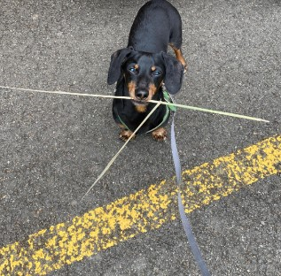
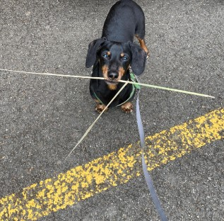

Pets
Carter

Carter was born in Seattle. However, my brother bought him and brought him to Boston. Whenever my brother did not have time to walk Carter, he would put him on the treadmill. When Carter became too much of a responsibility for my brother as a college student, he took Carter to Vancouver to live with my mom, sister, and me. Because we lived in the mountains, he would sometimes howl in the middle of the night whenever he saw a wild animal.
Whenever I threw him a ball, he ran to the ball but never brought it back to me. He would sometimes escape the backyard of our house if we forgot to close the gates by accident. Even if we looked for him everywhere and did not find him, he knew the way home and always came back in the end. He loved going to the forest and the beach. He had his own spot on the living room couch and would television with us if he was bored or tired.
Photo Gallery


Likes
- Treats
- Beach
- Forest
Cheeto (Chicken)

Cheeto is a cat who likes to eat a lot and play a lot. He has an obsession with his grandpa (human) and tries to get outside every single day. If he isn't causing problems, he is usually hiding in a seven foot tall cat tree and sleeping.
Another name for Cheeto is Chicken, because sometimes he sits very scrunched up and ends up looking like a rotisserie chicken. He was nicknamed this by one of his friends, and now he understands it as his own name. He is about six years old and still acts like a younger cat, despite being middle-aged.
Photo Gallery


Likes
- Treats
- Exploring
- My Dad
Luna
Luna is a German shepherd mix and a fireball of energy. Oftentimes, destroying anything in her path she will take and hide all your socks, shoes, and clothes for her to chew on. She loves playing catch at the park, it always gives her the zoomies.
Luna is a very jealous, loving, and protective dog. She really embraces her inner chihuahua and will bark at any stranger, car, or noise at night. She makes the perfect guard dog. But she is not at all aggressive. Luna is all bark no bite!
Photo Gallery


Likes
- Chicken
- The Park
- Belly Rubs
Terry

Terry is a playful and spirited dachshund that loves to play fetch with his bone or tennis ball. He loves wandering in forests and finding large sticks to take home. His favorite foods are kibble and peanut butter. Terry will run around frantically when it's time to eat at home.
My family found Terry at a shelter and decided to adopt it. He was 4 months old and is now 8 years old. Terry knows how to swim, but we don't tend to go often. Terry got poison ivy once; however, he quickly recovered and has been doing great since.
Photo Gallery


 

Likes
- Fetch
- Eating
- Belly rubs
Finn

Finn is a 7 year old grey cat. I feel like no one really knows cat breeds so I'm just gonna go with grey. He loves doing tricks for treats and his favorite is giving high fives to people. He might as well be a dog as he loves the outdoors and meeting new people. I can only describe him as goofy and chaotic.
Finn's biggest enemy is his vet. I don't know whether or not it's because his vet is an MSU alum, but he doesn't like him. He actually has to be prescribed a sedative before he goes to the vet office because he'll suddenly act like he was never a house cat for 7 years.
Photo Gallery


Likes
- Treats
- Head Rubs
- Sleeping in cardboard boxes